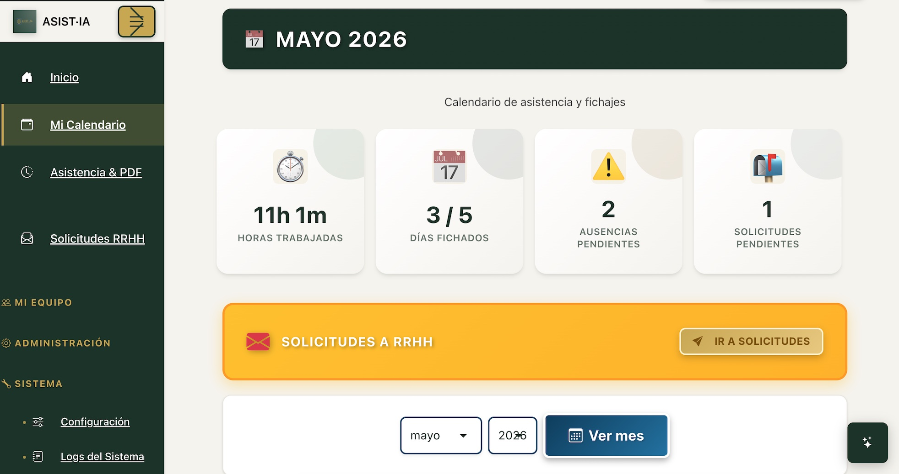
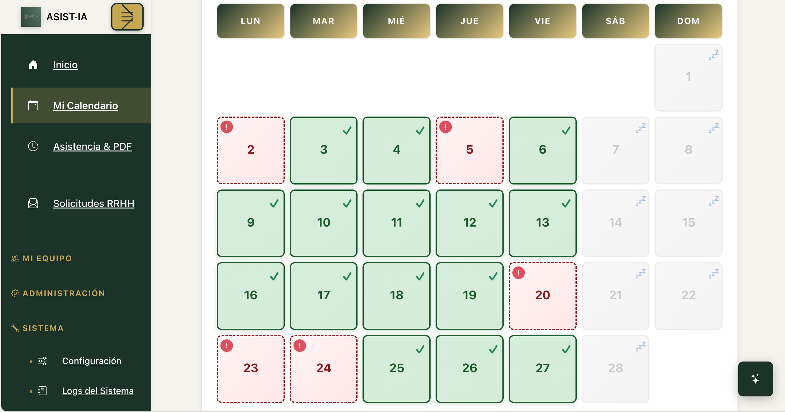
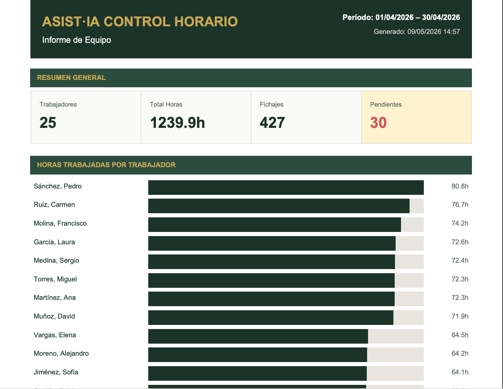
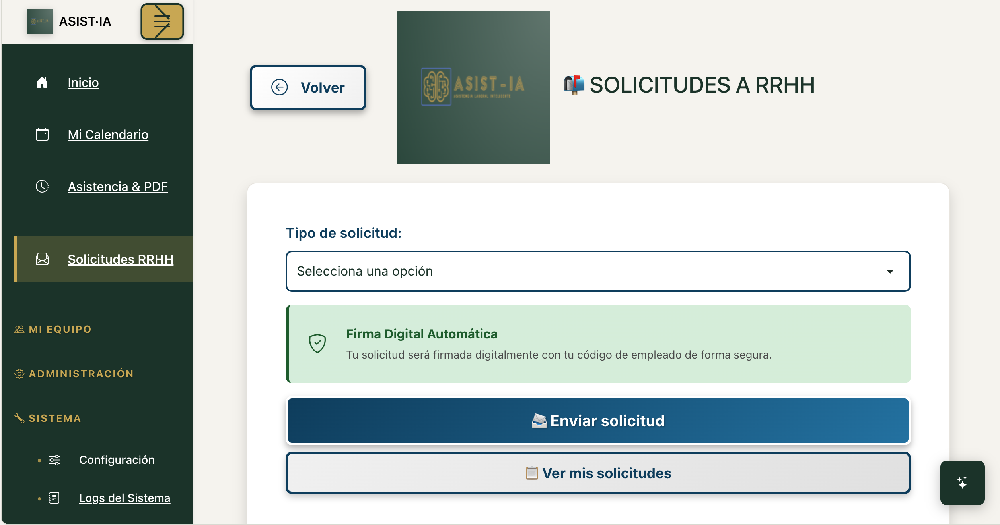
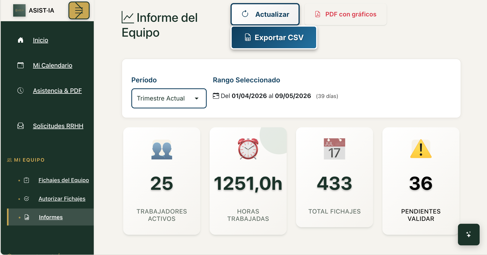

CONTROL HORARIO CON IA · ESPAÑA 2026
Controla el tiempo de tu equipo. Sin complicaciones.
Fichaje móvil con GPS, panel de control en tiempo real, informes PDF automáticos e integraciones con tu software actual. Todo en una plataforma que cumple la normativa española 2026.
ASIST·IA unifica control horario, solicitudes, análisis y evolución operativa en una plataforma preparada para empresas españolas.
RGPD Compliant
LOPD
Min. Trabajo España 2026
ASISTENTE IA
Analiza tu operativa con una nueva capa de inteligencia
ASIST·IA no se limita a registrar actividad. Añade una capa de análisis que ayuda a interpretar fichajes, solicitudes e incidencias con una lectura más clara del negocio.
El asistente está preparado para activarse con la API key del cliente y convertir la información diaria en contexto útil para gestionar mejor.
- Resumen operativo más rápido
- Lectura inteligente de actividad reciente
- Preparado para personalización por cliente
Analista inteligente de negocio
PROBLEMA REAL
Cuando el control depende de Excel, papel o herramientas desconectadas, el problema no es solo administrativo
La falta de trazabilidad, visibilidad y control en tiempo real termina afectando a la operativa, al cumplimiento y a la capacidad de crecer con orden.
Excel
Seguimiento manual, poca trazabilidad y demasiada dependencia de tareas repetitivas.
Papel
Errores, pérdida de información y procesos lentos que dificultan una revisión seria.
Herramientas aisladas
Datos dispersos, duplicidades y ausencia de una visión operativa centralizada.
Gestión reactiva
Se actúa tarde porque no existe una lectura clara de lo que está ocurriendo en el día a día.
FUNCIONALIDADES
Todo lo necesario para gestionar la jornada con más control
ASIST·IA reúne en un solo entorno las funciones clave para registrar, supervisar y ordenar la actividad diaria del equipo.
Fichaje y validación
Registra la jornada con trazabilidad, control y seguimiento estructurado.
Calendario operativo
Consulta actividad, incidencias y seguimiento diario con una visión más clara.
Solicitudes y aprobaciones
Gestiona vacaciones, permisos y revisiones internas desde un mismo entorno.
Informes automáticos
Genera documentación útil sin repetir procesos manuales innecesarios.
Panel en tiempo real
Visualiza el estado general de la operativa con mayor rapidez y claridad.
Roles y organización
Ordena accesos, responsabilidades y visibilidad según el perfil de usuario.
DESARROLLO INMINENTE
Evolución hacia una plataforma configurable por cliente
Cada empresa trabaja de forma distinta. La evolución de ASIST·IA no apunta a un software rígido, sino a una plataforma premium capaz de adaptarse a la realidad operativa de cada cliente.
Plataforma actual
Control horario, solicitudes, informes y base operativa centralizada.
Desarrollo inminente
CRM/ERP personalizado para el cliente, con adaptación de módulos, flujos y organización interna según su operativa real.
Siguiente evolución
Analítica avanzada, visión operativa en tiempo real y nuevas capacidades CRM/ERP personalizadas según los datos y necesidades reales de cada empresa.
ASIST·IA POR DENTRO
Recorre las principales vistas de la plataforma
Esta sección queda preparada para añadir capturas reales con el escalado correcto en cuanto estén disponibles.

Dashboard

Fichaje

Empleados

Solicitudes

Informes
COMPARATIVA
No todas las formas de controlar la jornada ofrecen el mismo nivel de claridad
Excel
Flexible, pero manual y difícil de escalar cuando la operación crece.
Papel
Simple al inicio, pero frágil, lento y poco trazable en el uso real.
Software genérico
Cubre funciones básicas, pero no siempre se adapta al contexto real del cliente.
ASIST·IA
Combina control, trazabilidad, evolución operativa y una visión de personalización premium por empresa.
DEMO RÁPIDA
Ver ASIST·IA en funcionamiento
Un recorrido rápido de 60 segundos por el acceso, el fichaje, las solicitudes y el panel principal de la plataforma.
Ver demo rápida
VISIÓN DEL PROYECTO
Una visión clara: control, trazabilidad y evolución real para cada empresa
ASIST·IA nace con una idea sencilla: ofrecer una solución seria para el control horario de hoy, pero preparada para convertirse en una plataforma más amplia, más inteligente y más adaptable a cada cliente.
“ASIST·IA no nace para registrar horas sin más, sino para ayudar a cada empresa a ganar control, claridad y capacidad de evolución.”
PLANES
Planes pensados para distintos momentos de crecimiento
Desde equipos pequeños hasta organizaciones con necesidades más complejas, ASIST·IA se adapta al tamaño y la evolución de cada empresa.
MICROEMPRESAS
Solicitar información
2 a 5 trabajadores
Plan a medida · Consultar
Starter
Para equipos que necesitan orden desde el primer día.
PRECIO SEGÚN TAMAÑO Y NECESIDADES
- Control horario básico
- Panel inicial
- Informes esenciales
Business
TODO LO DE STARTER INCLUIDO
Para empresas que necesitan más control y seguimiento.
PRECIO SEGÚN TAMAÑO Y NECESIDADES
- Solicitudes y aprobaciones
- Mayor visibilidad operativa
- Automatización ampliada
Enterprise
TODO LO DE BUSINESS INCLUIDO
Para organizaciones con estructura más compleja.
PRECIO SEGÚN TAMAÑO Y NECESIDADES
- Escalabilidad
- Enfoque avanzado
- Personalización progresiva
FAQ
Preguntas frecuentes
¿ASIST·IA sirve también para empresas pequeñas?
Sí. La plataforma está pensada para adaptarse tanto a equipos pequeños como a estructuras más amplias.
¿Necesito una instalación compleja?
No. El objetivo del producto es reducir fricción y facilitar una implantación clara y progresiva.
¿Puedo solicitar una demo antes de decidir?
Sí. De hecho, es la mejor forma de comprobar cómo encaja la plataforma con la operativa real de tu empresa.
¿El asistente IA es obligatorio?
No. Se plantea como una capa de valor añadida, preparada para activarse según la necesidad de cada cliente.
¿La plataforma se puede personalizar?
Sí. Ese es uno de los pilares de evolución del proyecto, especialmente en la hoja de ruta CRM/ERP.
¿ASIST·IA seguirá evolucionando con nuevas funciones?
Sí. La plataforma está concebida con una visión de crecimiento, mejora continua y adaptación por cliente.
GUÍA GRATUITA
Solicita una demo y descubre cómo encaja ASIST·IA en tu empresa
Conoce la plataforma, revisa el flujo de trabajo y valora su encaje real según el tamaño y la operativa de tu negocio.
BASE TECNOLÓGICA
Construido con tecnología preparada para evolucionar
ASIST·IA se apoya en una arquitectura moderna orientada a estabilidad, crecimiento y personalización, manteniendo el foco en el uso real por parte de la empresa.
ASP.NET Core 8
Blazor WebAssembly
SignalR
QuestPDF
SQL Server
Docker